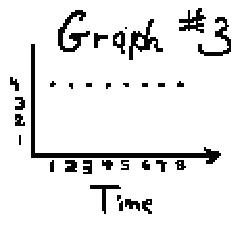

Tickertape->derivative/Chapter 14
Pictured below is a tickertape or recording timer. The problem is to see what happens when a weight that is attached to the paper tape, is dropped, and to find its speed after 4 ticks of time.
A vice is used to hold the timer on the table near its edge. When the switch is thrown, the rotor turns, hitting the carbon paper. When the tape is pulled through the timer, it is marked by the carbon paper at equal time intervals. Try different weights (a brick, a bolt..). Try just pulling the tape through the timer to make the dots the same distance apart; further apart but the same distance apart. Just experiment first. How can you tell from the dots on the tape about how fast the object moves?
Now get the data that we'll graph. Take one object and get the marks on the tape as the object falls to the ground. The time between dots is the same.Tear off the tape. It will look something like this, which was done by a student:
Measure the distance from the first point (do the best you can here, because it's sometimes hard to tell where the first point is), to each of the points on the tape. Make a table to keep track of the data.
As the weight fell, the time between the ticks stayed the same and the marks spread further apart.
After tick #
1 2
3 4
5 6 7
8
9 10
11 12
13
The
weight
6 14.5
25
37 53
72.5 94.5
121.5 153
191 235
285 342
fell (mm)
| The graph #1 at the right ---the distance (in mm.) from the starting point vs. time (in ticks) turns out to look very much like a parabola. The distance travelled increases in each time unit as the weight falls. Galileo first recorded data like this and found that the distance is proportional to the time squared; in other words, in 1,2,3, etc. seconds, the distance it travels will be some multiple of 12, 22, 32, ... Galileo used his pulse to measure the time in his experiments! The rule that fits this data is a parabola, like s= 1/2 ·at2, where t is the time in sec., s the distance in cm, and a the acceleration due to gravity, 980 cm/sec2. Note: our units of tme are ticks, not seconds. |
|
The graph #2 at the right shows the change in distance with the change in time. It was obtained by measuring the distance between the marks on the tape. This graph is very close to a straight line such as 2x, which we found for the derivative of x2. Its slope is about 3.9 mm/tick, so the average velocity v = 3.9·t.
|
| The graph #3 at the right is the change in speed vs. time or the average acceleration, whose equation is a = 3.9 mm/tick2. (The 2nd derivative of the parabola y=kx2 will be a constant, as shown in graph #3). |  |
We found the speed after 4 ticks 3 ways:
Method 1. From graph #1: The distance covered between ticks 3 and 4 was 12 mm. The distance between ticks 4 and 5 was 16 mm., so the speed after 4 ticks was between 12 and 16 mm/tick.
Method 2. We went to the graph of change in distance vs. change in time (graph #2). This graph shows the speed after 4 ticks was about 15 mm/tick.
Method 3. According to graph #3, the object accelerates about 3.9 mm/tick each tick. Therefore, after 4 ticks, its speed is 4·3.9 = 15.6 mm/tick.